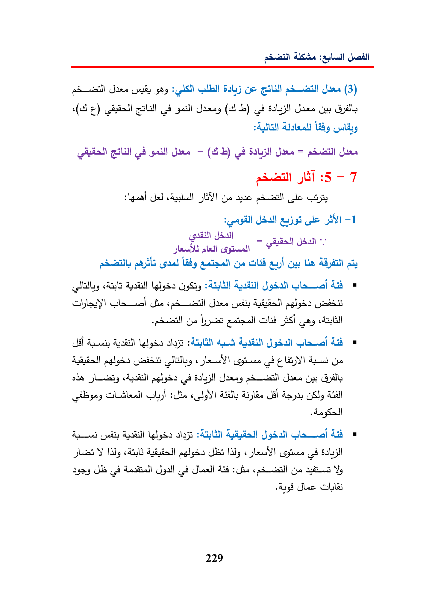

aducalil)aesCatsgh5.45GeGILJane(3)AgeilJaney(4SreeOnGillAdalGL—Jane=JanealBY)Gyeaacgill-1(gat!ssyee—=Jaa,ddsGlaalfie(adcllJaneGaddeGepedGlibAS)alslaysAdJgdal)Glau)TillyYIGyeoadGuHallsily}sie«lelUlslaysALU)Jgdal)Ua»My(28dalydog(gt(28fiecadceilGyeYy229